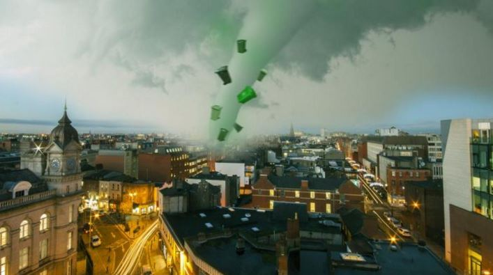

Greenbinado Building Strength Over Dublin
STAFF WRITER: JOE SOAP, February 24, 2017
THE media are calling Storm Doris one of the most vicious weather systems to ever hit Ireland, and things are only getting worse with the announcement that the gale force winds have whipped up a whirlwind of green bins in the Dublin area, which reporters are dubbing a ‘Greenbinado’.
With Storm Doris hitting on a Wednesday, two days after green bin collection day, conditions were perfect for the formation of a Greenbinado, with the 100mph winds easily picking up the more-or-less empty recycling vessels from all across the country, carrying them high into the stratosphere before eventually achieving peak mass over the east coast and dumping them down on Dublin city centre.
Reports of green bins smashing down into residential properties began to flood into Met Éireann this morning at 7am, and were initially dismissed as ‘regular storm activity’.
However, as the day rolled on it became apparent that this was something entirely unprecedented, as thousands of people became affected by traffic chaos caused by green bins raining down on the M50, with many more waking up to the horrific sight of their gardens utterly destroyed by empty Weetabix boxes and takeaway menus.
“I narrowly avoided being hit by a green bin which has been traced back to an address in Mullingar,” said one Glasnevin man, battening up his windows in a bid to protect his house from the Greenbinado as it raged all around him.
“Get indoors and stay indoors. The Greenbinado is only going to get stronger as the day goes on. Make no attempt to cross the city to save your estranged wife and son. This is no time to be a hero, there’s green bins all over the fucking place”.
Meanwhile, secondary binados have been reported around the country, with much of Cork now classed as ‘uninhabitable’ due to the stink caused by a short but violent Brownbinado.
Are you getting the most out of your website?
I can help you get there.